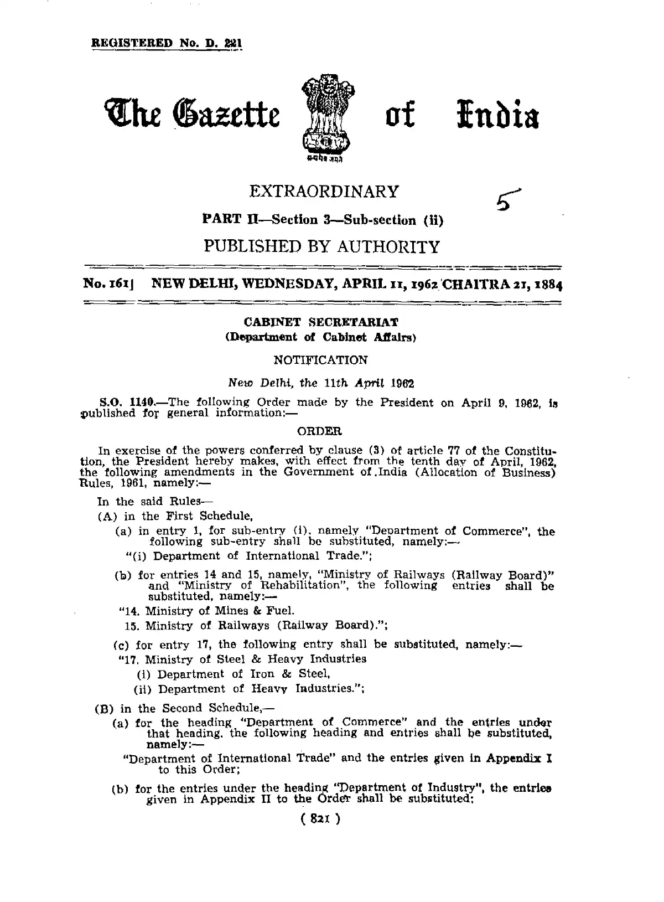
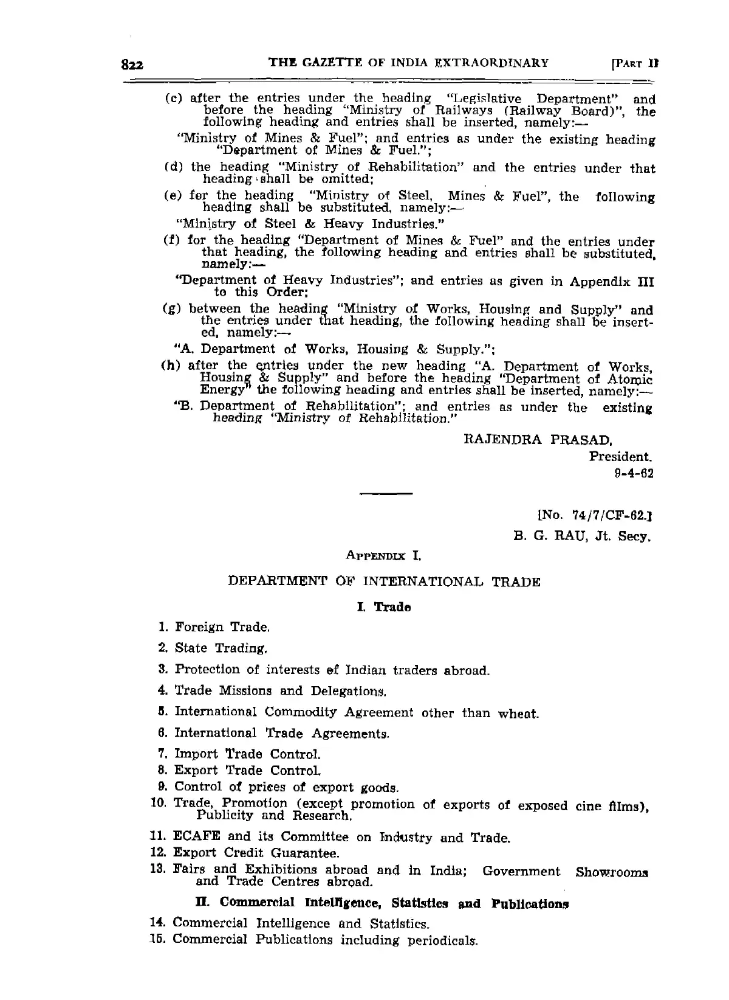
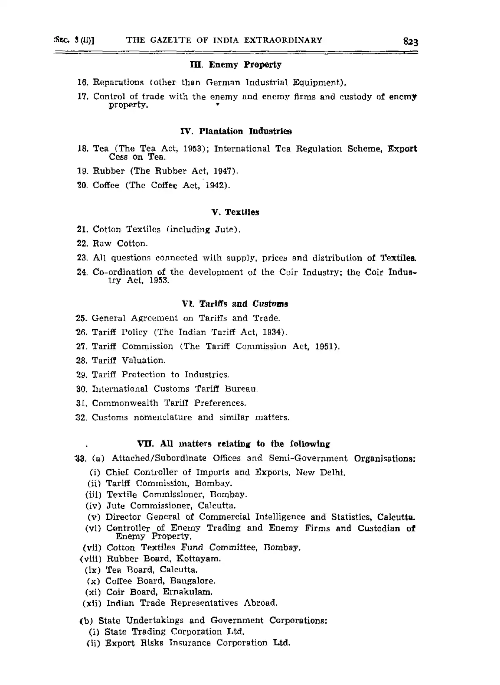
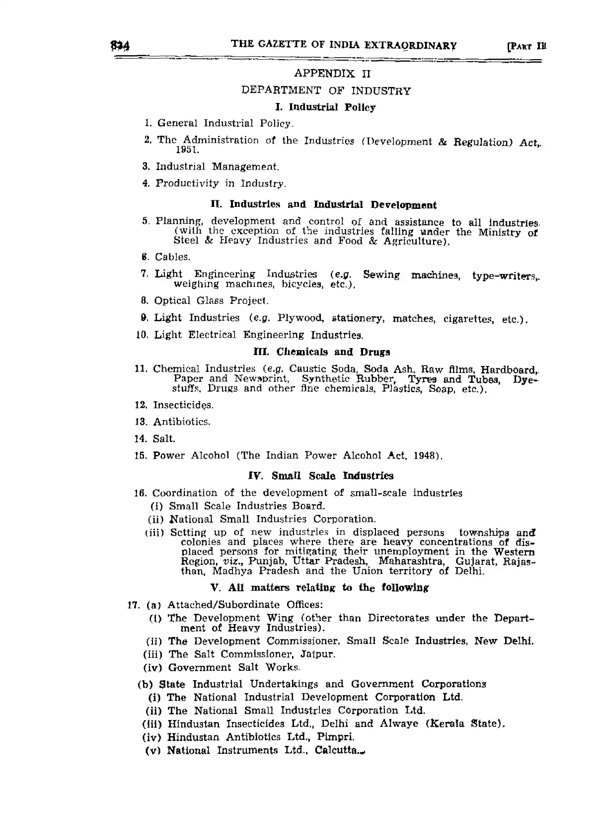
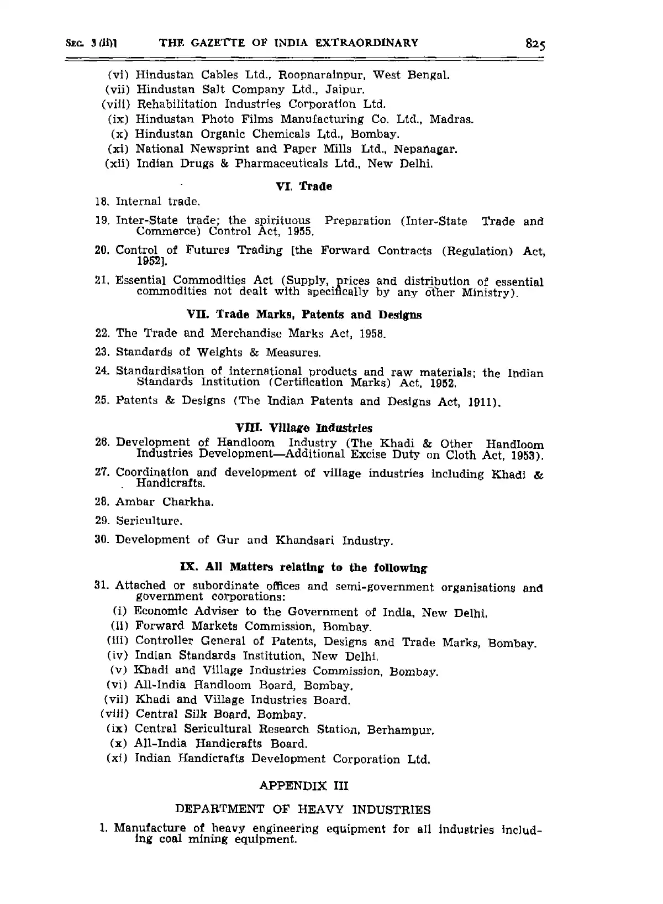
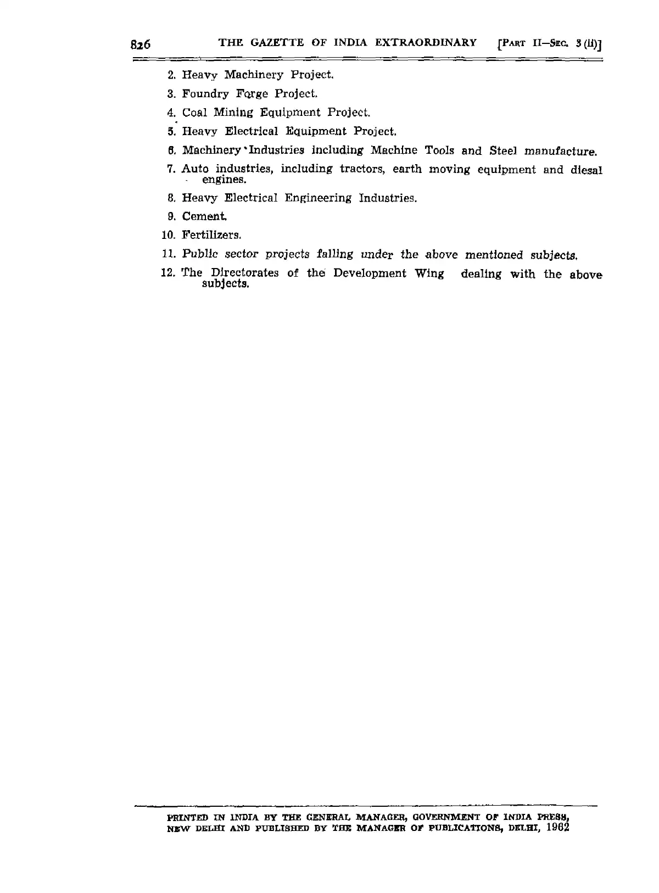

Amendment #5 (S.O. 1140, 1962)
11 changes: 3 to the First Schedule, 8 to the Second Schedule. 10 applied1 not applied
What it did to the ministries
- splitSteel, Mines and Fuel divides into Mines and Fuel, and Steel and Heavy Industries. change 2, 3, 8 · histories: Steel, Mines & Fuel, Mines & Fuel, Steel & Heavy Industries
- absorbedMinistry of Rehabilitation joins Ministry of Works, Housing & Supply (25 → 45) change 2, 10, 11 · histories: Rehabilitation, Works, Housing and Rehabilitation
The order, page by page
Page 1 of 6

12345Schedule 1 › entry 1 › item 1
- i. Department of International Trade.
applied at schedule 1 › ministry 1 › department i in the Rules after #5
read hindi missing
Schedule 1 › entry 14; Schedule 1 › entry 15
- 14. Ministry of Mines & Fuel.
- 15. Ministry of Railways (Railway Board)
applied at schedule 1 › ministry 14 in the Rules after #5
read hindi missing
Schedule 1 › entry 17
- 17. Ministry of Steel & Heavy Industries
- i. Department of Iron & Steel
- i. Department of Heavy Industries.
applied at schedule 1 › ministry 17 in the Rules after #5
read hindi missing
Schedule 2 › Department of Commerce
- Department of International Trade
- I. Trade
- 1. Foreign Trade.
- 2. State Trading.
- 3. Protection of interests of Indian traders abroad.
- 4. Trade Missions and Delegations.
and 49 more
- 5. International Commodity Agreement other than wheat.
- 6. International Trade Agreements.
- 7. Import Trade Control.
- 8. Export Trade Control
- 9. Control of prices of export goods.
- 10. Trade, Promotion (except promotion of exports of exposed cine films) Publicity and Research
- 11. ECAFE and its Committee on Industry and Trade.
- 12. Export Credit Guarantee.
- 13. Fairs and Exhibitions abroad and in India; Government Showrooms and Trade Centres abroad.
- II. Commercial Intelligence, Statistics and Publications
- 14. Commercial Intelligence and Statistics.
- 15. Commercial Publications including periodicals. SEC. 3 (II)]
- III. Enemy Property
- 16. Reparations (other than German Industrial Equipment).
- 17. Control of trade with the enemy and enemy firms and custody of enemy property.
- IV. Plantation Industries
- 18. Tea (The Tea Act, 1953); International Tea Regulation Scheme, Export Cess on Tea.
- 19. Rubber (The Rubber Act, 1947).
- 20. Coffee (The Coffee Act, 1942).
- V. Textiles
- 21. Cotton Textiles (including Jute).
- 22. Raw Cotton.
- 23. All questions connected with supply, prices and distribution of Textiles.
- 24. Co-ordination of the development of the Coir Industry; the Coir Industry Act, 1953.
- VI. Tariffs and Customs
- 25. General Agreement on Tariffs and Trade.
- 26. Tariff Policy (The Indian Tariff Act, 1934).
- 27. Tariff Commission (The Tariff Commission Act, 1951).
- 28. Tariff Valuation.
- 29. Tariff Protection to Industries.
- 30. International Customs Tariff Bureau.
- 31. Commonwealth Tariff Preferences.
- 32. Customs nomenclature and similar matters.
- VII. All matters relating to the following
- 33.
- a. Attached/Subordinate Offices and Semi-Government Organisations:
- i. Chief Controller of Imports and Exports, New Delhi.
- ii. Tariff Commission, Bombay.
- ii. Textile Commissioner, Bombay.
- iv. Jute Commissioner, Calcutta.
- v. Director General of Commercial Intelligence and Statistics, Calcutta.
- vi. Controller of Enemy Trading and Enemy Firms and Custodian of Enemy Property.
- vii. Cotton Textiles Fund Committee, Bombay (viii) Rubber Board, Kottayam.
- ix. Tea Board, Calcutta.
- x. Coffee Board, Bangalore. (x1) Coir Board, Ernakulam.
- xli. Indian Trade Representatives Abroad.
- b. State Undertakings and Government Corporations:
- i. State Trading Corporation Ltd.
- ii. Export Risks Insurance Corporation Ltd.
applied at schedule 2 › ministry MINISTRY OF COMMERCE & INDUSTRY › department A in the Rules after #5
read hindi missing, read page break, states inferred number kept
Schedule 2 › Department of Industry
- DEPARTMENT OF INDUSTRY
- I. Industrial Policy
- 1. General Industrial Policy.
- 2. The Administration of the Industries (Development & Regulation) Act
- 1951.
- 3. Industrial Management.
and 63 more
- 4. Productivity in Industry.
- II. Industries and Industrial Development
- 5. Planning, development and control of and assistance to all industries. (with the exception of the industries falling under the Ministry of Steel & Heavy Industries and Food & Agriculture).
- 6. Cables.
- 7. Light Engincering Industries (e.g. Sewing machines, type-writers,. weighing machines, bicycles, etc.).
- 8. Optical Glass Project.
- 9. Light Industries (e.g. Plywood, stationery, matches, cigarettes, etc.).
- 10. Light Electrical Engineering Industries.
- III. Chemicals and Drugs
- 11. Chemical Industries (e.g. Caustic Soda, Soda Ash, Raw films, Hardboard Paper and Newsprint, Synthetic Rubber, Tyres and Tubes, Dyestuffs, Drugs and other fine chemicals, Plastics, Soap, etc.).
- 12. Insecticides.
- 13. Antibiotics.
- 14. Salt.
- 15. Power Alcohol (The Indian Power Alcohol Act, 1948).
- IV. Small Scale Industries
- 16. Coordination of the development of small-scale industries
- i. Small Scale Industries Board.
- ii. National Small Industries Corporation.
- iii. Setting up of new industries in displaced persons townships and colonies and places where there are heavy concentrations of displaced persons for mitigating their unemployment in the Western Region, viz., Punjab, Uttar Pradesh, Maharashtra, Gujarat, Rajasthan, Madhya Pradesh and the Union…
- V. All matters relating to the following
- 17.
- a. Attached/Subordinate Offices: (1) The Development Wing (other than Directorates under the Department of Heavy Industries). (II) The Development Commissioner, Small Scale Industries, New Delhi.
- iii. The Salt Commissioner, Jaipur.
- iv. Government Salt Works.
- b. State Industrial Undertakings and Government Corporations
- i. The National Industrial Development Corporation Ltd.
- ii. The National Small Industries Corporation Ltd.
- iii. Hindustan Insecticides Ltd., Delhi and Alwaye (Kerala State).
- iv. Hindustan Antibiotics Ltd., Pimpri.
- v. National Instruments Ltd., Calcutta.. SEC. 3 (1)
- vi. Hindustan Cables Ltd., Roopnarainpur, West Bengal.
- vii. Hindustan Salt Company Ltd., Jaipur
- vii. Rehabilitation Industries Corporation Ltd.
- ix. Hindustan Photo Films Manufacturing Co. Ltd., Madras.
- x. Hindustan Organic Chemicals Ltd., Bombay.
- xi. National Newsprint and Paper Mills Ltd., Nepanagar.
- xii. Indian Drugs & Pharmaceuticals Ltd., New Delhi.
- VI. Trade
- 18. Internal trade.
- 19. Inter-State trade; the spirituous Preparation (Inter-State Trade and Commerce) Control Act, 1955.
- 20. Control of Futures Trading [the Forward Contracts (Regulation) Act 1952].
- 21. Essential Commodities Act (Supply, prices and distribution of essential commodities not dealt with specifically by any other Ministry).
- VII. Trade Marks, Patents and Designs
- 22. The Trade and Merchandise Marks Act, 1958.
- 23. Standards of Weights & Measures.
- 24. Standardisation of international products and raw materials; the Indian Standards Institution (Certification Marks) Act, 1952.
- 25. Patents & Designs (The Indian Patents and Designs Act, 1911).
- VIII. Village Industries
- 26. Development of Handloom Industry (The Khadi & Other Handloom Industries Development—Additional Excise Duty on Cloth Act, 1953).
- 27. Coordination and development of village industries including Khadi & Handicrafts.
- 28. Ambar Charkha.
- 29. Sericulture.
- 30. Development of Gur and Khandsari Industry.
- IX. All Matters relating to the following
- 31. Attached or subordinate offices and semi-government organisations and government corporations:
- i. Economic Adviser to the Government of India, New Delhi. (11) Forward Markets Commission, Bombay. (HI) Controller General of Patents, Designs and Trade Marks, Bombay.
- iv. Indian Standards Institution, New Delhi.
- v. Khadi and Village Industries Commission, Bombay.
- vi. All-India Handloom Board, Bombay.
- vi. Khadi and Village Industries Board. (viii) Central Silk Board, Bombay.
- ix. Central Sericultural Research Station, Berhampur.
- x. All-India Handicrafts Board.
- x. Indian Handicrafts Development Corporation Ltd.
applied at schedule 2 › ministry MINISTRY OF COMMERCE & INDUSTRY › department B in the Rules after #5
read hindi missing, read page break
Page 2 of 6

67891011after Schedule 2 › Legislative Department
- Ministry of Mines & Fuel"; and entries as under the existing heading Department of Mines & Fuel.
applied at schedule 2 › ministry MINISTRY OF LAW. › department B in the Rules after #5
read hindi missing
Schedule 2 › Ministry of Rehabilitation
applied at schedule 2 › ministry in the Rules after #5
Schedule 2 › Ministry of Steel, Mines & Fuel
- Ministry of Steel & Heavy Industries.
applied at schedule 2 › ministry Ministry of Steel & Heavy Industries. in the Rules after #5
read hindi missing
Schedule 2 › Department of Mines & Fuel
- DEPARTMENT OF HEAVY INDUSTRIES
- 1. Manufacture of heavy engineering equipment for all industries including coal mining equipment. THE GAZETTE OF INDIA EXTRAORDINARY
- 2. Heavy Machinery Project.
- 3. Foundry Forge Project.
- 4. Coal Mining Equipment Project.
- 5. Heavy Electrical Equipment Project.
and 7 more
- 6. Machinery Industries Including Machine Tools and Steel manufacture.
- 7. Auto industries, including tractors, earth moving equipment and diesal engines.
- 8. Heavy Electrical Engineering Industries.
- 9. Cement.
- 10. Fertilizers.
- 11. Public sector projects falling under the above mentioned subjects.
- 12. The Directorates of the Development Wing dealing with the above subjects.
not applied (the change could not be placed in the Rules as read; see How this document was read)
read hindi missing, read page break
after Schedule 2 › Ministry of Works, Housing and Supply
- A. Department of Works, Housing & Supply.
applied at schedule 2 › ministry MINISTRY OF WORKS, HOUSING & SUPPLY in the Rules after #5
read hindi missing
after Schedule 2 › Ministry of Works, Housing and Supply › Department of Works, Housing & Supply
- B. Department of Rehabilitation"; and entries as under the existing heading "Ministry of Rehabilitation.
applied at schedule 2 › ministry MINISTRY OF WORKS, HOUSING & SUPPLY › department Department of Rehabilitation in the Rules after #5
read hindi missing
Page 3 of 6

Page 4 of 6

Page 5 of 6

Page 6 of 6

How this document was read
Edits to the reading
| Date | By | Edit | Before → after |
|---|---|---|---|
| 12 November 2026 | claude | word corrected | |
| 14 November 2026 | mukundesh | word corrected |
Changes placed by an inference rule
| Change | Rule | Status | What |
|---|---|---|---|
| 4 | number_kept | accepted | change 4: schedule 2 › ministry MINISTRY OF COMMERCE & INDUSTRY › department DEPARTMENT OF COMMERCE keeps its number A, the heading put for it quoted without one |
| 5 | number_kept | accepted | change 5: schedule 2 › ministry MINISTRY OF COMMERCE & INDUSTRY › department DEPARTMENT OF INDUSTRY keeps its number B, the heading put for it quoted without one |
Known issues
| Change | Issue | Known as |
|---|---|---|
| 9 | change 9: no department Department of Mines & Fuel under schedule 2 | A unit cited by a name the Second Schedule does not have |
From the Government of India (Allocation of Business) Rules, 1961 and their amendments, as published by the Cabinet Secretariat (cabsec.gov.in), read by orgpedia. The readings of the older scanned gazettes have known gaps.